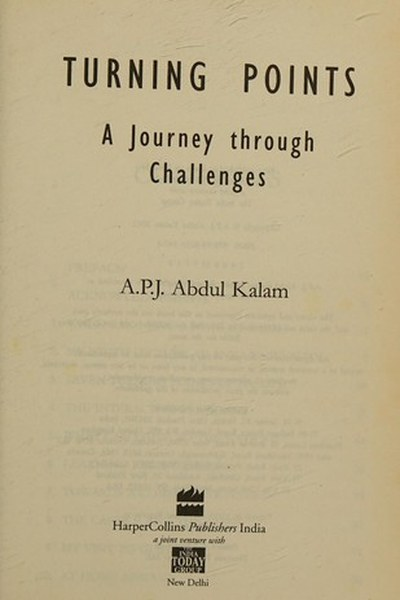

Library › Self-Improvement
Turning Points — Summary & Key Lessons

The decisions that shaped a life — from a small town to the nation's highest office.
📖 OPEN THE FULL INTERACTIVE BREAKDOWN →🌐 Read it in Hindi, Hinglish, Gujarati, Tamil & 22 more languages — free, with audio.
💡 The Big Idea
A great life is not made by luck; it is made at turning points — moments where a decision changes the direction of everything after. Kalam walks through the pivotal choices of his life and the values behind them: dreaming big while staying grounded, taking responsibility when it's scary, and putting the mission before the self. His message: your turning points are coming — the question is whether your values will be ready for them.
🧠 The 6 Key Lessons
Lesson 1: Turning Points Are Chosen, Not Given
The Early Years
Kalam's life changed at specific moments — a childhood decision to study science, a rejection from the Air Force, a posting that seemed like a setback and became the foundation of his rocket work. His point: you can't control which moments matter, but you can control the values you carry into them. Preparation is what makes a turning point turn toward you.
📖 Example: The Air Force rejected Kalam by a whisker. That 'failure' pushed him toward aeronautics at DRDO — the path that eventually led to India's missile programme. The practical edge: 'turning points are chosen, not given' is not a one-time decision — it's a habit… Read the full example →
⚡ Do this: Identify one past 'rejection' that redirected your life. Write how it led somewhere you now value.
Lesson 2: Great Teams Are Built on Trust, Not Hierarchy
The Missile Man
Leading India's missile programme taught Kalam that a project succeeds when the leader makes every person feel the mission is theirs. He walked the labs at night, sat with technicians, remembered names. His style: the leader's job is to remove obstacles and create belief — not to command. Trust flows down; performance flows up.
📖 Example: At SLV-3, the team that failed in 1979 stayed together and delivered in 1980 — because Kalam had built ownership, not blame. The lesson: teams that are trusted fail forward faster than teams that are punished. Read the full example →
⚡ Do this: This week, delegate one task fully — including the authority and the credit — and see what ownership does to the result.
Lesson 3: The Nation Is Built by Small Acts
The Vision
Kalam's 'Vision 2020' was not about grand monuments — it was about food, healthcare, education and employment for every citizen. His recurring message: national transformation is the sum of millions of small, competent acts. You don't need a title to serve; the engineer, the teacher, the farmer are all building the nation.
📖 Example: Kalam's famous response to schoolchildren everywhere: dream, and the nation dreams with you. He treated every child he met as the future of India — because he meant it. The real test of this lesson is a bad day: the principle that survives a crisis, a tight… Read the full example →
⚡ Do this: Do one small act of competence this week that serves someone beyond your immediate circle — teach, fix, or build something.
Lesson 4: Leadership Is a Service, Not a Position
The Presidency
As President, Kalam redefined the office: he spent his time with students, scientists and the marginalised, not in ceremony. His belief: the highest position is just a bigger platform for service. Authority is borrowed from the people; it must be spent on them. His presidency is remembered for the 'People's President' title — earned, not announced.
📖 Example: Kalam continued teaching and visiting schools after his presidency, at age 70+, until his final day. His life's last act was a lecture to students. In practice, 'leadership is a service, not a position' shows up in tiny daily choices long before it shows up… Read the full example →
⚡ Do this: Use whatever position you hold — however small — to serve someone this week without expecting anything back.
Lesson 5: Persist Through Failure With a Clear Head
The Setbacks
The SLV-3 launch failed in 1979 and Kalam took public responsibility. His team's response wasn't shame — it was a systematic hunt for the error, and a successful launch within a year. His lesson: failure is data. The leader who absorbs blame and converts failure into analysis builds a team that fears nothing except not trying.
📖 Example: After the 1979 failure, Kalam did not fire anyone; he ran the post-mortem, fixed the valve problem, and the team launched the satellite successfully in 1980. Most people nod at this principle and change nothing. The gap between agreeing and acting is where… Read the full example →
⚡ Do this: Take one recent failure and run a 20-minute post-mortem: what was the actual cause, what's the fix, what did you learn — no blame, just data.
Lesson 6: Knowledge Without Values Is Dangerous
The Teacher
Kalam repeatedly warned that competence without conscience produces brilliant harm — skilled people serving wrong goals. His formula for a meaningful life: knowledge + values = wisdom. He wanted young India to be not just skilled but ethical: honest, compassionate and responsible. The most dangerous person is the talented one without values.
📖 Example: Kalam's talks always balanced 'learn, earn, innovate' with 'serve, respect, protect'. He saw engineers building weapons and insisted the same minds build food security and education. Read the full example →
⚡ Do this: Before your next big task, ask: who does this serve, and does it serve them honestly? Adjust if the answer is uncomfortable.
✅ 5-Step Action Plan
- Map your life's turning points — and the values you carried into them.
- Delegate one task fully, credit included.
- Do one act of service beyond your circle this week.
- Run a 20-minute post-mortem on one failure, blame-free.
- Pair your next skill-building goal with a values check.
⚠️ When This Doesn't Work
Kalam's 'dream big, work hard, institutions deliver' is inspiring — and NASA Challenger is the reminder that institutions don't always deliver: the shuttle's engineers had the same brilliance, discipline and mission-faith Kalam celebrates, and the culture still punished their warnings until seven people died. Kalam's own institutions worked because leaders like him protected the truth-tellers; the caveat is that personal excellence inside a corrupt or fearful system becomes personal tragedy. Dream big — and audit whether the system around you rewards honesty before you bet your life on it.
💀 The Graveyard Proves It
🚀 NASA Challenger — The Engineers Said No. Burn: 7 astronauts, live on television. Read the full case study →
💬 Best Quotes from Turning Points
- “Dream is not that which you see while sleeping, it is something that does not let you sleep.”
- “When you want to succeed as bad as you want to breathe, then you will be successful.”
- “All of us do not have equal talent. But all of us have an equal opportunity to develop our talents.”
Interactive version: mark lessons as read, listen in your language, share quote cards.